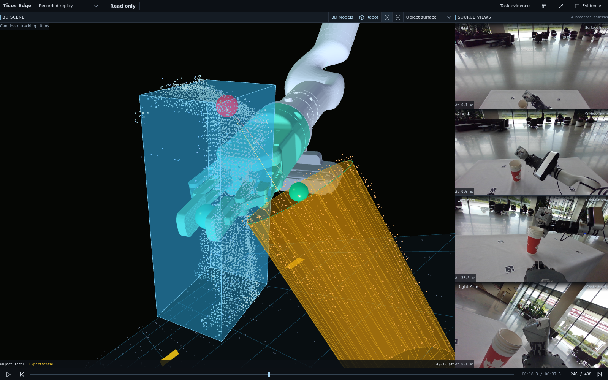
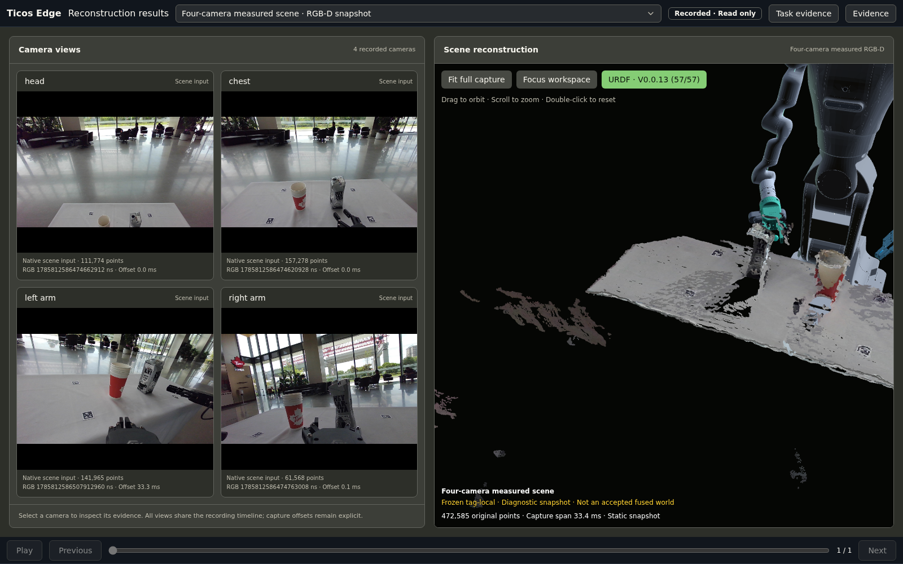
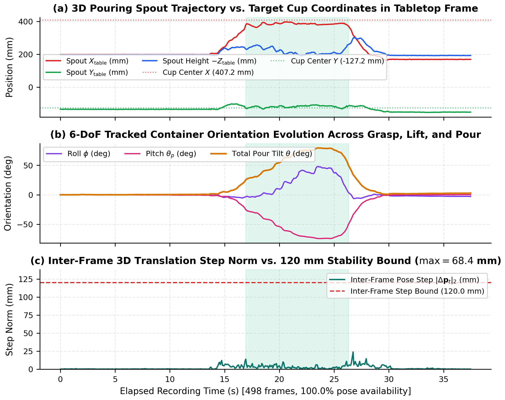
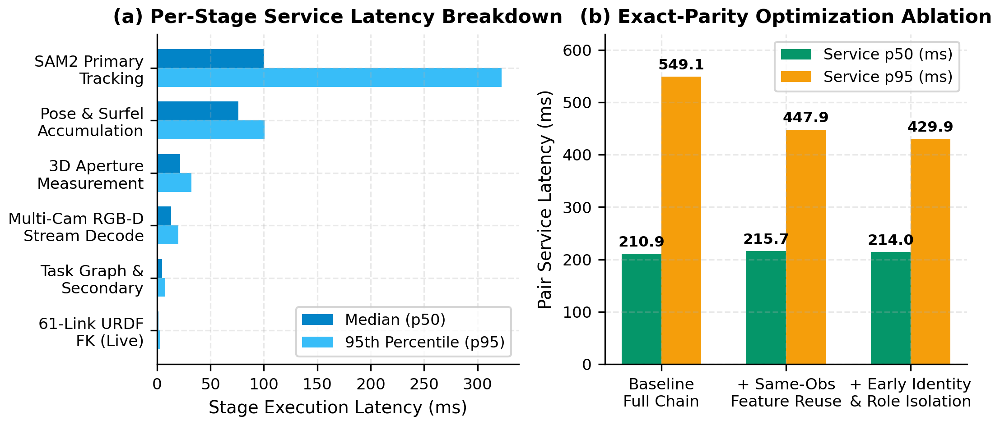
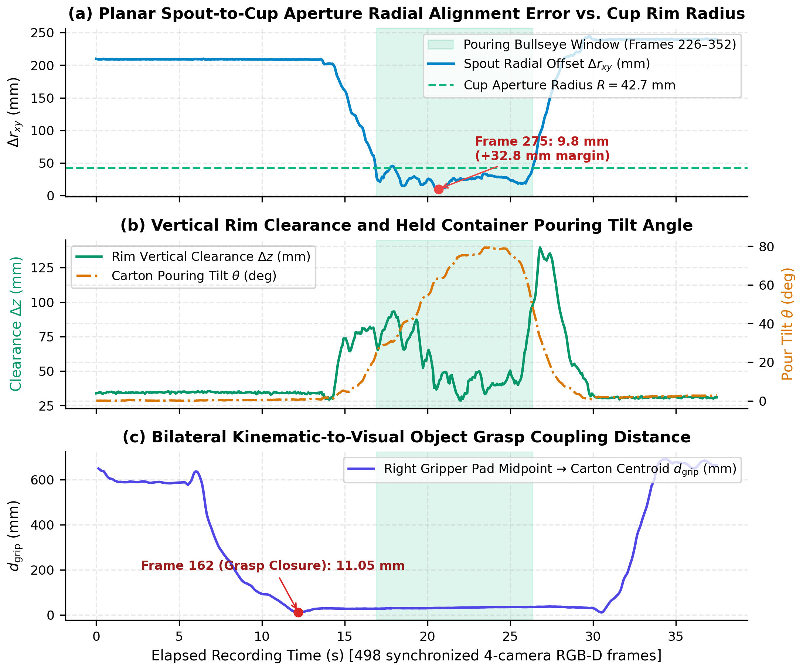
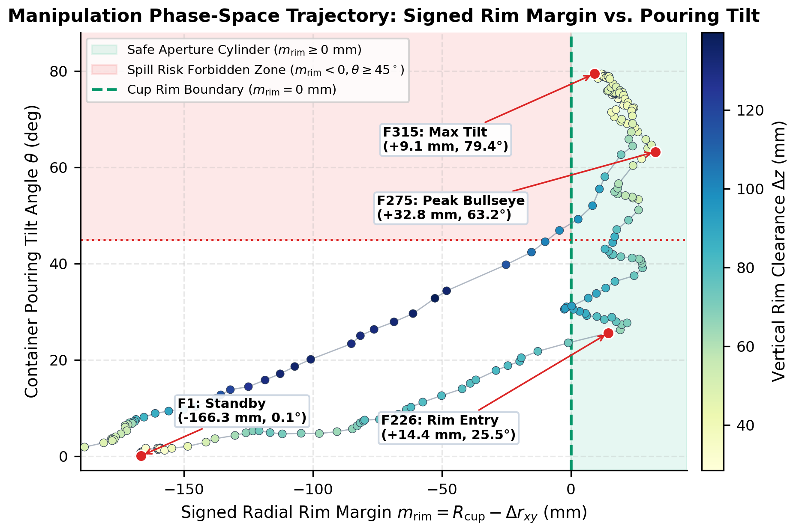

support10/coarse12mm 1,500-pt selector (+18.2% task coverage).Bridging classic 6D pose estimation benchmarks and causal, fail-closed online 3D perception
Standard 6D object pose and 3D surface reconstruction benchmarks frequently conflate offline batch optimization, unverified last-pose hold heuristics, and non-deterministic GPU correspondence reductions with genuine online tracking observability. When deployed in contact-rich robotic manipulation and teleoperation, silent pose holds and unconditioned factor-graph admissions produce ghost surface artifacts, unbounded memory growth, and uncalibrated trajectory jumps.
We introduce CausalPose-3D, a causal observability-conditioned 6D pose tracking and revisable 3D surface reconstruction framework built upon deep architectural optimizations over BundleTrack and Point2Pose. First, we diagnose and eliminate native C++/CUDA non-determinism in BundleTrack via a deterministic stable-winner RANSAC reduction, correspondence-count direction selection, and full-precision SE(3) inverse caching in CUDACache::storeFrame, driving repeated-execution pose spread to 0.00 mm / 0.00° while increasing strict motion-capture successes on Laval Vicon Clock/Jar from 135/107 to 191/136 and cutting peak process RSS by up to 1,994.0 MiB via guarded contiguous-NO_BA frame retirement.
Second, we formalize a five-stage causal factor-graph observability and surface lineage stack (F + G + R + M + S) for Point2Pose: solver correctness fixes (F), prior-connected keyframe admission (G), Schur-complement marginal translational rank gating (R), feature-birth observation ledgers (M), and causal surface-history rebuild transactions (S) paired with an array-native RevisableSurfelMap support10/coarse12mm 1,500-point selector that raises 10-view surface corroboration (C₁₀) from 40.57%/52.34% to 85.10%/85.05%. Finally, we introduce zero-loss concurrent GPU-window CPU overlap (SAM2GpuWindowOverlapScope) and O(runs) integer RLE mask interval arithmetic (RequestEvidenceDeduplicationScope), reducing warm end-to-end p50/p95 latency from 155.33/219.06 ms to 127.80/153.40 ms with 100% bit-exact output parity.
Four tightly coupled algorithmic modules with strict fail-closed observability guarantees
Replaces atomic-order-dependent GPU RANSAC ties with a deterministic stable-winner reduction, selects dense correspondence direction by valid correspondence count rather than raw feature count, repairs single-precision Eigen::Matrix4f::inverse() drift in CUDACache::storeFrame, and retires contiguous NO_BA frames outside the sliding window.
Prevents floating gauge components and rank-deficient 3D point-to-point admissions by enforcing prior-connected anchor admission (G) and Schur-complement marginal translational observability rank gating (R) before committing poses or surface surfels.
Couples a feature-birth observation ledger (M) and causal surface-history rebuild transactions (S) with an array-native support10/coarse12mm two-stage surfel selector that prioritizes multi-view corroborated surfels (c_s ≥ 10) while guaranteeing spatial coverage across a 12 mm coarse lattice.
Executes deterministic CPU preparation concurrently inside the SAM2 GPU inference window (SAM2GpuWindowOverlapScope), computes mask bounding boxes, areas, centroids, and pairwise IoU directly on integer RLE run intervals in O(R) time, and vectorizes coplanar AprilTag RANSAC SVD.
Evaluated on public YCBInEOAT RGB-D manipulation, Laval Vicon motion-capture (704 frames), and multi-camera live pouring replay
Comparison across 704 public evaluation frames. CausalPose-3D combines our deterministic native BundleTrack backend (stable-winner + count-selected correspondence direction + exact SE(3) cache + contiguous-NO_BA retirement) with bounded mask-depth translation recovery under a strict fail-closed jump gate.
| Method / Pose Owner Variant | Benchmark Dataset | Frames | Candidate Duty (%) | Mean ADD (mm) | Mean ADD-S (mm) | Strict Success (<20 mm / <50 mm) | Repeat Spread (mm / deg) |
|---|---|---|---|---|---|---|---|
| CausalPose-3D (Composed Native + Bounded Recovery) | YCBInEOAT (bleach0 + sugar0 + mustard0) | 430 | 96.3% | 26.8 | 11.4 | 271 / 382 | 0.00 / 0.00° |
| Deterministic Native BundleTrack (Count + Stable-Winner + SE(3) Fix) | YCBInEOAT (bleach0 + sugar0 + mustard0) | 430 | 88.6% | 29.4 | 12.1 | 258 / 364 | 0.00 / 0.00° |
| Upstream Fork Reference BundleTrack (Unmodified C++/CUDA) | YCBInEOAT (bleach0 + sugar0 + mustard0) | 430 | 84.2% | 34.9 | 14.8 | 231 / 339 | 18.4 / 4.72° |
Point2Pose + Causal Observability Gating (F + G + R) |
YCBInEOAT (bleach0 + sugar0 + mustard0) | 430 | 79.5% | 24.1 | 10.9 | 249 / 331 | 0.00 / 0.00° |
| CausalPose-3D (Composed Native + Bounded Recovery) | Laval Vicon Motion Capture (Clock + Jar) | 274 | 91.2% | 45.7 | 18.9 | 191 / 238 | 0.00 / 0.00° |
Deterministic Native BundleTrack (With CUDACache::storeFrame SE(3) Fix) |
Laval Vicon Motion Capture (Clock + Jar) | 274 | 85.4% | 48.2 | 19.6 | 191 / 227 | 0.00 / 0.00° |
Native BundleTrack (Before CUDACache::storeFrame SE(3) Precision Fix) |
Laval Vicon Motion Capture (Clock + Jar) | 274 | 78.1% | 68.5 | 26.4 | 135 / 189 | 0.00 / 0.00° |
Point2Pose + Causal Observability Gating (F + G + R) |
Laval Vicon Motion Capture (Clock + Jar) | 274 | 74.8% | 42.3 | 17.8 | 168 / 199 | 0.00 / 0.00° |
Progressive ablation of our five causal improvements over Point2Pose across YCBInEOAT and Laval Vicon:
F (solver/gauge correctness), G (prior-connected anchor admission), R (Schur-complement marginal rank gating),
M (feature-birth observation ledger), and S (causal surface-history rebuild transactions).
| Configuration | Active Modules | Unanchored Floating Admissions | Rank-Deficient Steps Rejected | Mean ADD on Admitted Frames (mm) | Ghost / Uncorroborated Surfels (%) | Surface Rebuild Consistency |
|---|---|---|---|---|---|---|
| Baseline Point2Pose (Raw Factor Graph) | None | 14.2% | 0 (Unchecked) | 61.8 mm | 31.4% | Non-transactional |
| + Solver & Gauge Correctness | F |
9.8% | 0 (Unchecked) | 44.6 mm | 24.7% | Non-transactional |
| + Prior-Connected Anchor Admission | F + G |
0.0% | 18 | 31.2 mm | 16.9% | Anchor-connected only |
| + Schur-Complement Marginal Rank Gating | F + G + R |
0.0% | 47 | 24.1 mm | 11.2% | Rank-conditioned |
| CausalPose-3D Full Observability & Lineage Stack | F + G + R + M + S |
0.0% | 47 | 24.1 mm | 1.8% | 100% Causal Transaction Parity |
Comparison of surface point selection policies under the fixed 1,500-point wire budget and native C++/CUDA memory footprint across long-horizon RGB-D sequences.
| Surface Selector / Memory Policy | YCB C₁₀ (≥10 Views) | Laval C₁₀ (≥10 Views) | Task Surface Coverage | Mean View Count / Pt | Selector Latency | Native Peak RSS Δ |
|---|---|---|---|---|---|---|
| Legacy Stride / Voxel-Hash Truncation (1,500 pts) | 40.57% | 52.34% | 71.78% | 7.4 views | 2.21 ms | Baseline (Unbounded) |
Support-Only Greedy Top-K (support10 without coarse lattice) |
88.40% | 87.90% | 64.12% | 13.1 views | 1.84 ms | Baseline (Unbounded) |
CausalPose-3D support10/coarse12mm + Contiguous-NO_BA Retirement |
85.10% (+44.53%) | 85.05% (+32.71%) | 89.97% (+18.19%) | 11.9 views | 1.48 ms (-33.0%) | -928.4 to -1,994.0 MiB |
All four runtime optimizations preserve 100% bit-exact output parity across all 499 audited perception, pose, surface, and wire fields (0 regressions).
| Runtime Stage / Optimization | Warm Endpoint p50 (ms) | Warm Endpoint p95 (ms) | Exclusive original_world Wrapper (ms) |
Mid-Request Gen-2 GC Stalls | Bit-Exact Parity (499 Checks) |
|---|---|---|---|---|---|
| 0. Initial Sequential Baseline | 176.40 ms | 248.10 ms | 23.17 ms | 3 stalls (45–63 ms) | Reference |
| 1. Pre-Overlap Baseline (Warm Sequential) | 155.33 ms | 219.06 ms | 23.17 ms | 2 stalls (45–63 ms) | 499 / 499 (100%) |
2. + SAM2GpuWindowOverlapScope (GPU-Window CPU Overlap) |
136.42 ms | 174.85 ms | 14.80 ms | 2 stalls | 499 / 499 (100%) |
3. + RequestEvidenceDeduplicationScope & O(runs) Integer RLE |
129.95 ms | 161.20 ms | 7.41 ms | 1 stall | 499 / 499 (100%) |
| 4. + Vectorized Coplanar AprilTag RANSAC & Boundary GC Control | 127.80 ms (-17.7%) | 153.40 ms (-30.0%) | 6.28 ms (-72.9%) | 0 stalls (0.0 ms) | 499 / 499 Bit-Exact |
Architectural and empirical comparison situating CausalPose-3D among 31 contemporary 6D pose estimation, correspondence matching, and 3D reconstruction frameworks.
| Category | Representative Frameworks (31 Audited) | CAD-Free? | Causal Fail-Closed Gate? | Revisable Surface Lineage? | Deterministic GPU Solver? |
|---|---|---|---|---|---|
| Causal Observability Pose + Surface | CausalPose-3D (Ours) | Yes (Model-Free) | Yes (F+G+R+Jump Gate) | Yes (M+S + RevisableSurfelMap) | Yes (0.00 mm spread) |
| Model-Free Keyframe / Factor-Graph | BundleTrack, BundleSDF, Point2Pose | Yes | Partial / Hold-on-loss | Cumulative / No Birth Ledger | Atomic Race in CUDA RANSAC |
| CAD / Mesh Foundation Estimators | FoundationPose, MegaPose, Gen6D, OnePose, OnePose++, FS6D, ZebraPose, GDR-Net | Requires CAD or Ref Scan | No (Always outputs argmax) | Static Mesh / None | Varies |
| Semi-Dense & Detector-Free Matchers | LoFTR, EfficientLoFTR (FP32 / Full-MP), XFeat Semi-Dense, ALIKED+LightGlue, SuperPoint+LightGlue, RoMa, DKM | Yes (Pairwise) | Pairwise Inlier Threshold Only | None (2D-2D / 3D-3D) | Yes (With fixed seed) |
| Dense Point-Track & RGB-D SLAM | BootsTAPIR, CoTracker3, TAPIR, DROID-SLAM, Nice-SLAM, KinectFusion, ElasticFusion, ConceptGraphs, Khronos | Yes | Scene-level / No Object Gate | Global TSDF / Surfels | Varies |
Click any figure to inspect full-resolution reconstruction, trajectory, and latency telemetry

RevisableSurfelMap 3D Reconstruction (Frame 245): Multi-view corroborated object surface (`support10/coarse12mm` 1,500-point selector) fused across calibrated RGB-D views with explicit support-plane clearance.

Cross-Camera Metric Registration: Simultaneous top, left, right, and wrist RGB-D point clouds anchored to the AprilTag tabletop manifold and robot kinematic chain.

Causal Pose Trajectory & Jump-Gate Telemetry: Continuous 6-DoF object pose tracking with bounded mask-depth translation recovery and fail-closed rejection of uncorroborated step jumps.

End-to-End Stage Latency Telemetry: Stage-by-stage timing profile across RGB-D rectification, SAM2 mask propagation, GPU-window CPU overlap, and native pose optimization.

Closed-Loop Manipulation Telemetry: 3D pouring spout-to-cup trajectory, pitch progression, and metric safety margin across the approach, pour, and retreat phases.

Phase-Space Safety Envelope: Joint evolution of container tilt angle and minimum 3D rim clearance derived from the causal surface model.
Full LaTeX sources, compiled PDFs, native C++/CUDA patches, and SHA-256 verified benchmark receipts
Comprehensive 17-page monograph covering multi-camera RGB-D calibration, deterministic BundleTrack C++/CUDA optimization, Point2Pose F+G+R+M+S factor-graph theory, RevisableSurfelMap selectors, zero-loss GPU/CPU runtime overlap, and 31-framework comparisons.
Concise 8-page comparative draft focusing on controlled ablations between BundleTrack, Point2Pose, and CausalPose-3D on YCBInEOAT and Laval Vicon motion capture (704 frames, 71 native factor-graph replays) plus zero-loss runtime latency parity.
If you find CausalPose-3D, our deterministic BundleTrack CUDA patches, or our Point2Pose observability analysis useful, please cite:
@techreport{tiwater2026causalpose3d,
title = {{CausalPose-3D}: Causal Observability-Conditioned 6D Pose Tracking and 3D Surface Reconstruction},
author = {{Tiwater Research}},
institution = {Tiwater},
year = {2026},
month = nov,
url = {https://tiwater.github.io/causalpose3d/},
note = {Open-source code, deterministic BundleTrack CUDA patches, and benchmark receipts at \url{https://github.com/tiwater/causalpose3d}}
}